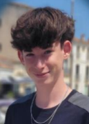

Réaliser un stage d'observation dans un cabinet vétérinaire pour éclaircir ma vision de mon métier futur.
Stage d'observation au GAEC de la ferme du saule
Année : février 2026
Élève de seconde générale au lycée La Salle de Lille, je suis passionné par la nature et les animaux.
Je prépare mon orientation vers un métier de vétérinaire. Je suis une personne curieuse, rigoureuse et autonome, qui aime apprendre.